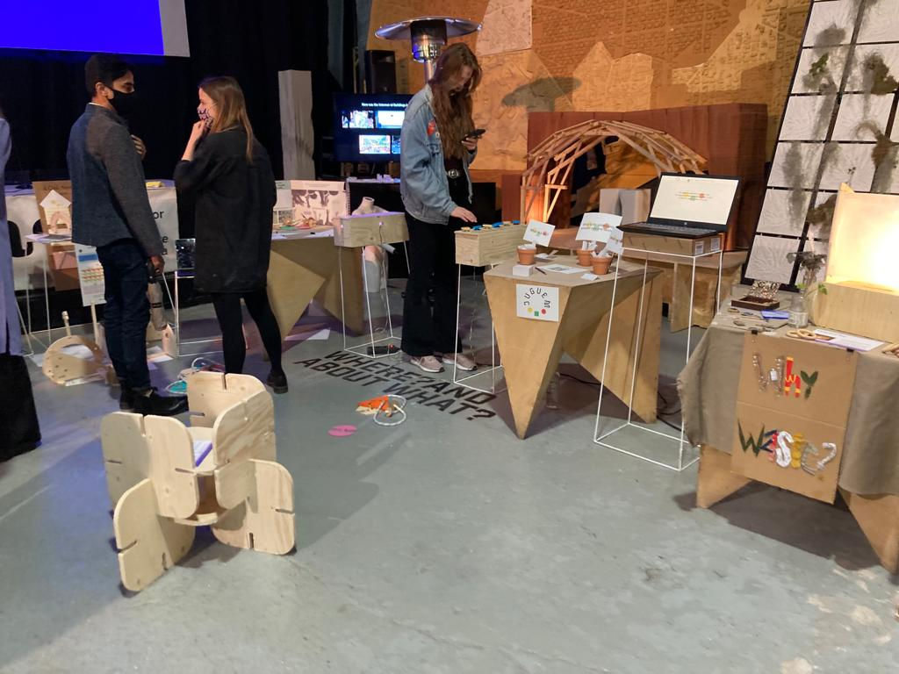
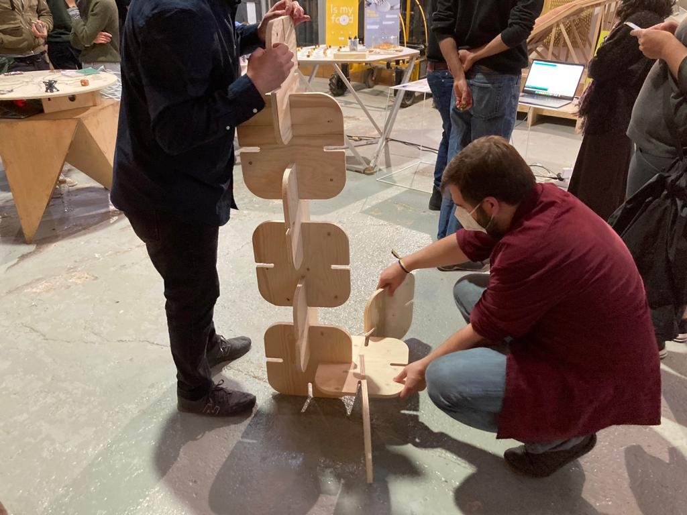
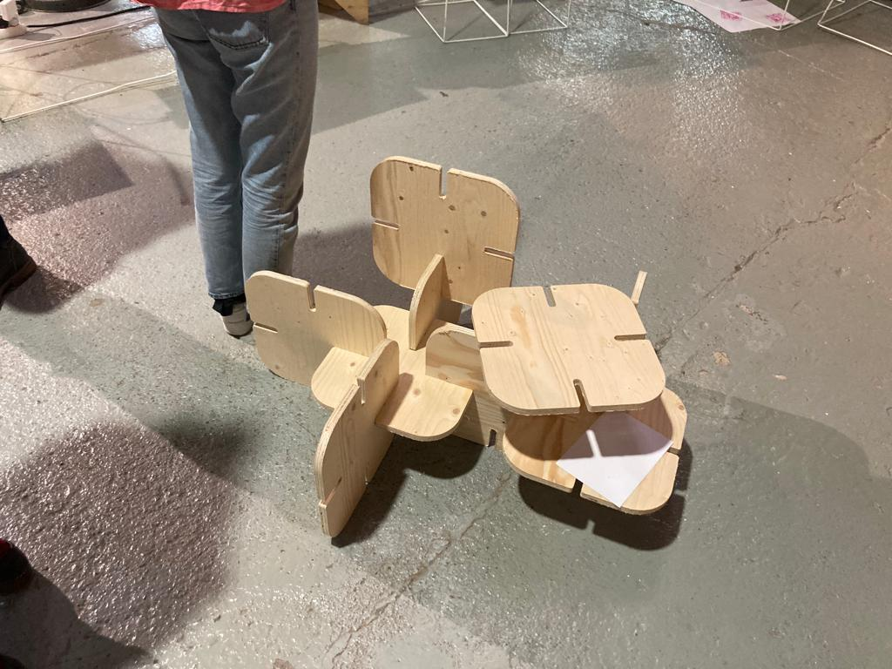
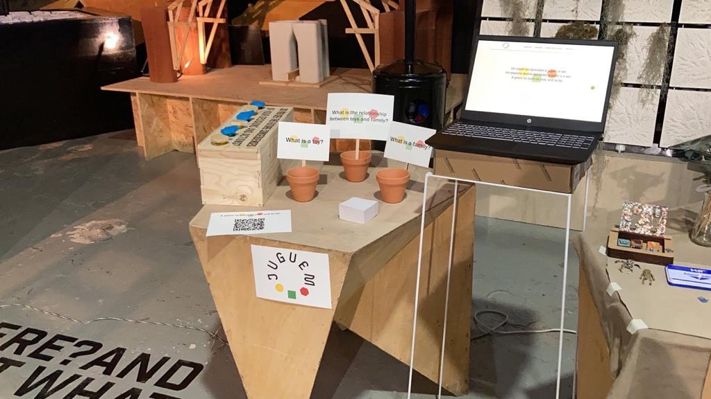
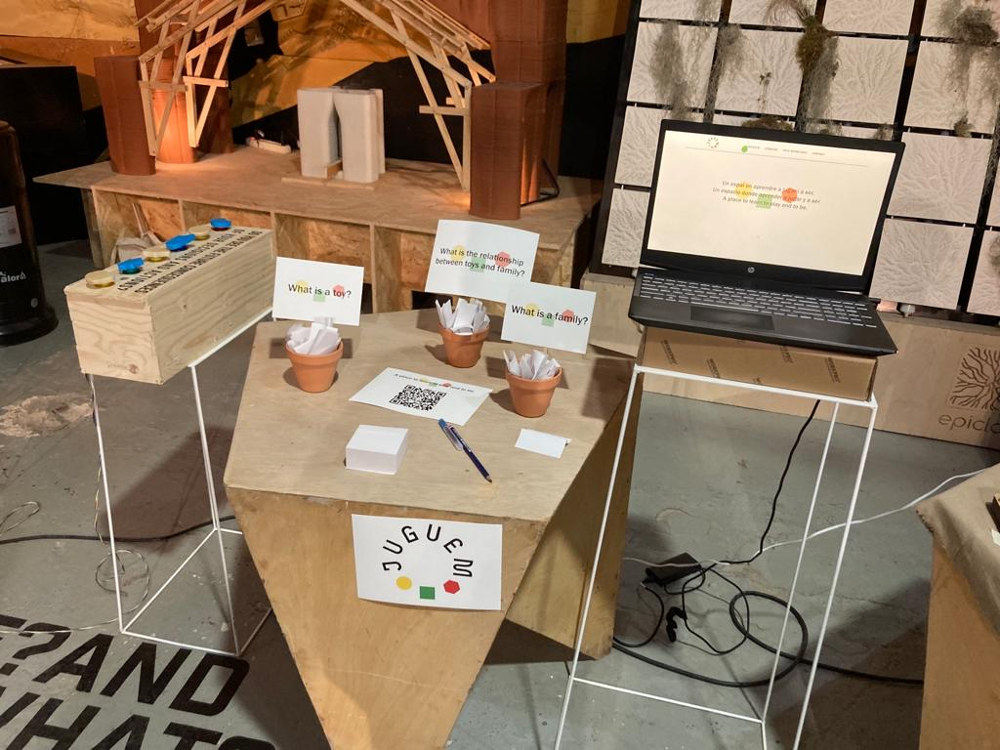

Reflection
During the previous interventions the turning point in all of them was to be able to check human behaviour in different contexts, be it with nature and children and teachers. As well as with myself, with the connection and the backlash of waste with the person. In this way, I consider that the time has come to open the dialogue.
After these experiments, I would like to be able to test the relationship between people and reality. As with the inner child, how to bring it out. And to be able to question the family structure and games. Therefore, everyone is interesting to talk to, because everyone has new concepts and ideas.
Intervention 3
Intention
To connect adults with their children, in a context that is not made for play. And to create an internal debate about family structure and toys.
Who
Design Dialogues 2 attendees.
Where
IAAC.
What
Bring the modular structures and observe how they interact with them. Also ask questions and create a discussion about family and toys.
The intervention has different parts. The first one is the game of the modules, which allows the child inside to come out. And the second one the questions where we also hope to create a bit of debate. That will help to create the manifesto of Juguem.

Modular Game

The game was left in the centre of the corridor, where participants could easily recognise it and had enough space to play. The purpose was to check if the inner child really came out, without saying anything. That is why it was not indicated that it was possible to play. It was simply an attempt to induce the participant's curiosity. With the stimulation of the game alone.
 


Conclusion
As I could see, people were very involved. A lot of people came to ask me if they could play. And when others saw how they were playing, they joined in to participate. They created different objects, like the tower, which reminded them of their childhood. And between five people they created the chair.
What was most interesting was how no one was reproachful in trashing what others had done. Or not only in destroying, but in moving a single piece, to create something different.
It was also interesting to see how some of them were just watching with curiosity and didn't dare to ask. That's when I felt empowered enough to ask them if they wanted to play. Many of them did so accordingly. But in all of them came out the look and smile of a naughty and curious child. It was nice.
What I really gained from this experience was the power and the realisation that the project had a utility, and that it is important for all people. Because in the end the game makes us interact with ourselves and connect with parts of us that were left behind.
Questions
For reflection and to be able to introduce the juguem platform and project. Three key questions were asked: What is the family, what is a toy and what is the relationship between toys and the family.
 